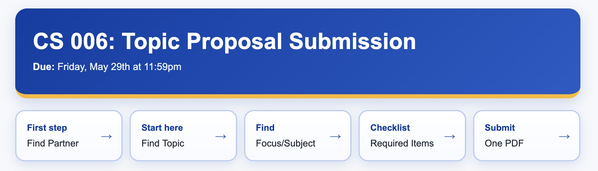
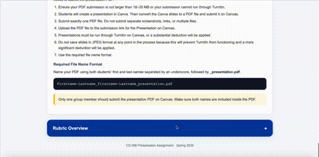

Replacing Traditional Static Assignment PDFs with Interactive Webpages
Most programming assignments are still distributed as static PDFs, but I started noticing the same issues repeatedly in my courses: students missing requirements and overlooking rubric details; Too much instructions to parse through. With short attention spans, I think making assignments be webpages with interactive elements can make it very accessible.
This quarter, I experimented with replacing traditional PDFs with interactive HTML-based lab specifications. Instead of scrolling through pages of text, students could click on and navigate through sections, expand rubric details, preview layouts, and interact directly with examples inside the assignment page itself.

Clickable assignment navigation and section organization.

Expandable rubric sections embedded directly in the webpage.
One unexpected benefit was that the assignment format itself reinforced web development concepts for a course about web development. Students were learning HTML and CSS while simultaneously consuming course material built with the same code.
I also found that embedding checkpoints and rubric expectations directly into the lab page reduced confusion and improved project pacing significantly.
As AI tools become more common in programming education, I think assignment design matters more than ever. Clear structure, transparency with rubric items, and interactive guidance can really help students.